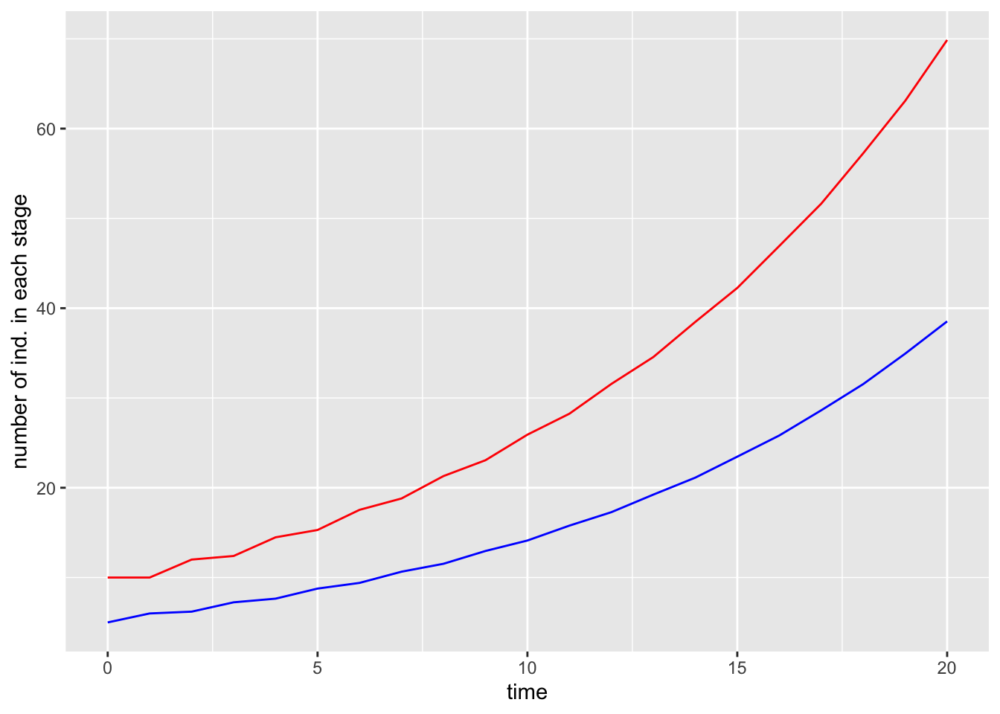
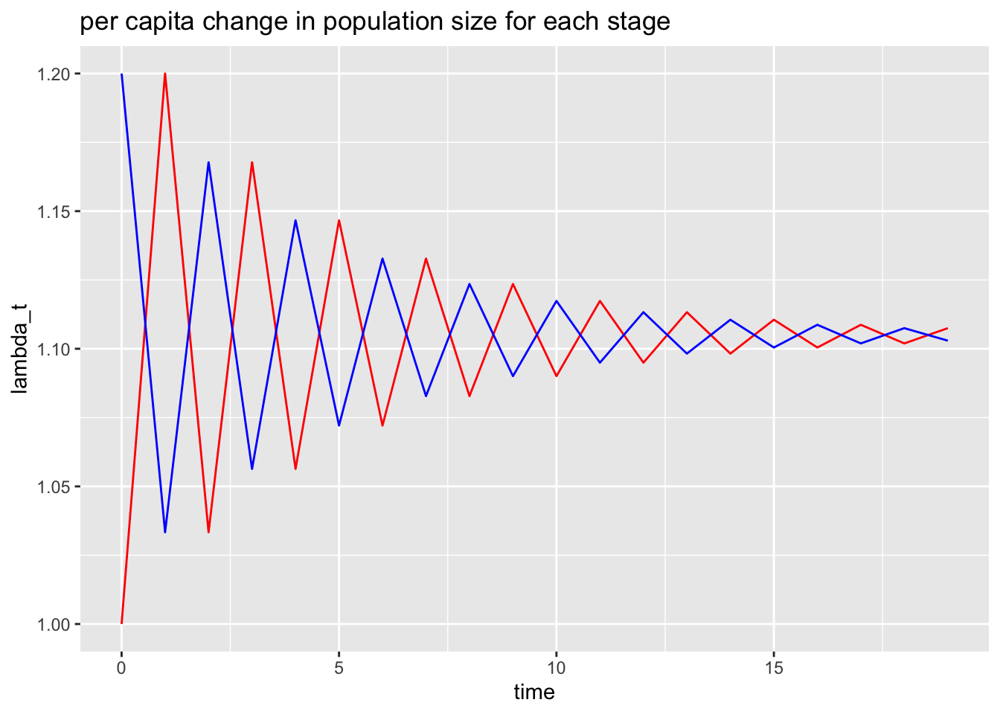
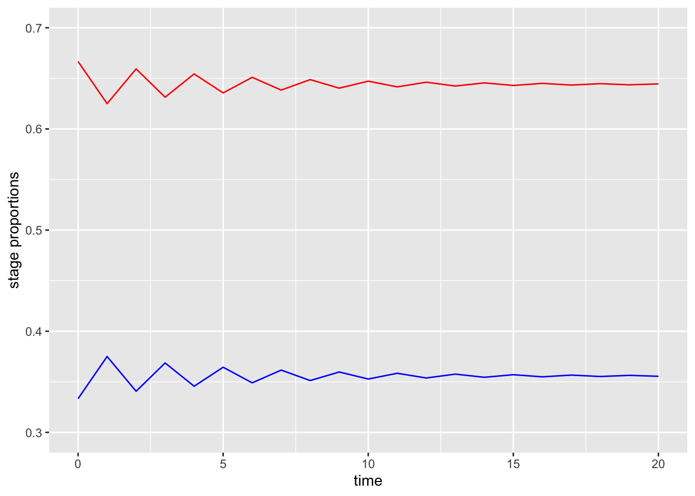

14 Feb 17: ASSIGNMENT Stage-structured population dynamics
Class will be in CSF 2218
ASSIGNMENT 3 is due on March 3.
Your assignment will be to write an R markdown file that does these same calculations but for a different projection matrix, \(A\) (further details are provided after these sample calculations).
Install and load the popbio package.
require("popbio")## Loading required package: popbioDefine our projection matrix (this is the one from class on Feb 16, but with 0.2 in row 2, column 2, so this is a stage-structured, rather than and age-structured, projection matrix, where there is a 0.2 probability of surviving to the next year when older than 1 year. The stages are 0-1 years old and \(>1\) year old):
A = matrix(c(0,2,0.5,0.2), 2,2, byrow=TRUE)
A## [,1] [,2]
## [1,] 0.0 2.0
## [2,] 0.5 0.2Type A into the console to check that A has the correct number of rows and columns and the numerical entries in the correct place.
Read about the function pop.projection(). (One way to do this is to type ?pop.projection into the Console. The details will appear in the Help pane).
Let us first try to do one iteration (i.e., one future time step) for the projection matrix, when we have the initial values \(n = c(10,5)\). This means that initially, i.e., at \(t=0\), we have 10 individuals aged 0-1 years, and 5 individuals aged more than 1 year. Because this is in matrix notation, we need to write the initial number of individuals as a vector, i.e. using the \(c()\) function.
Let’s do this:
n0 = c(10,5)
n1 = pop.projection(A, n0, 2)
n1$stage.vectors## 0 1
## [1,] 10 10
## [2,] 5 6Here the print out is the number of individuals in each of the stages at time 0 and time 1. You should be able to verify, by doing the matrix multiplication, that \([10, 6]\) is the correct stage-structured population size for \(t=1\), for the projection matrix, \(A\), when the intial population size is \([10,5]\).
Now, let us continue to estimate the stage-structured population size further into the future:
n20 = pop.projection(A, n0, 21)
n20$stage.vectors## 0 1 2 3 4 5 6 7 8 9
## [1,] 10 10 12.0 12.40 14.480 15.2960 17.53920 18.80384 21.29997 23.06383
## [2,] 5 6 6.2 7.24 7.648 8.7696 9.40192 10.64998 11.53192 12.95637
## 10 11 12 13 14 15 16 17
## [1,] 25.91273 28.24638 31.56201 34.55878 38.47377 42.25354 46.92447 51.63843
## [2,] 14.12319 15.78101 17.27939 19.23688 21.12677 23.46224 25.81922 28.62608
## 18 19 20
## [1,] 57.25216 63.08886 69.86993
## [2,] 31.54443 34.93497 38.53142That output is hard to read and understand so let’s graph the result. To graph in ggplot() we will need to reformat this output as a dataframe:
data = data.frame(time = as.numeric(colnames(n20$stage.vectors)), pop1 = n20$stage.vectors[1,], pop2 = n20$stage.vectors[2,])
data## time pop1 pop2
## 0 0 10.00000 5.00000
## 1 1 10.00000 6.00000
## 2 2 12.00000 6.20000
## 3 3 12.40000 7.24000
## 4 4 14.48000 7.64800
## 5 5 15.29600 8.76960
## 6 6 17.53920 9.40192
## 7 7 18.80384 10.64998
## 8 8 21.29997 11.53192
## 9 9 23.06383 12.95637
## 10 10 25.91273 14.12319
## 11 11 28.24638 15.78101
## 12 12 31.56201 17.27939
## 13 13 34.55878 19.23688
## 14 14 38.47377 21.12677
## 15 15 42.25354 23.46224
## 16 16 46.92447 25.81922
## 17 17 51.63843 28.62608
## 18 18 57.25216 31.54443
## 19 19 63.08886 34.93497
## 20 20 69.86993 38.53142Running the data command in the console checks that data looks correct when reformatted as a dataframe.
require(ggplot2)
g1 = ggplot(data, aes(x=time))+
geom_line(aes(y=pop1), col = "red")+
geom_line(aes(y=pop2), col = "blue")+
ylab("number of ind. in each stage")
g1
It is interesting to consider the per capita change in the population size (within a stage) for each time step. We calculate this as:
\[ \lambda_t = 1+\frac{N_{i,t+1} - N_{i,t}}{N_{i,t}} \qquad \mbox{for $t= \{0, 1, \dots, T-1\}$.} \]
Let’s do this for each of the stages and plot the result:
n1t1 = tail(data$pop1,-1)
n1t = head(data$pop1,-1)
lambda1 = 1+(n1t1 - n1t)/n1t
n2t1 = tail(data$pop2,-1)
n2t = head(data$pop2,-1)
lambda2 = 1+(n2t1 - n2t)/n2t
data2 = data.frame(time = head(data$time,-1), lambda1, lambda2)
g2 = ggplot(data=data2, aes(x=time))+
geom_line(aes(y=lambda1), col = "red")+
geom_line(aes(y=lambda2), col = "blue")+
ylab("lambda_t")+
ggtitle("per capita change in population size for each stage")
g2
This plot has two interesting features:
eventually the per capita change in population size becomes constant, and
the constant value is the same for both stages.
In fact, both stages are growing exponentially, and in the limit as \(t\to \infty\) the exponential growth rate for both stages is the value that this plot is converging to (i.e., a little more than 1.1).
This has been calculated for us by the pop.projection() function (the final per capita change for 20 iterations). Let’s recover the value:
n20$lambda## [1] 1.105867Super! As we expected: a little more than 1.1.
In fact, the exponential growth rate, for both stages, in the limit as \(t \to \infty\) is the dominant eigenvalue of \(A\). Let’s find the eigenvalues of \(A\):
eigen(A)$values## [1] 1.1049876 -0.9049876Because \(A\) is a 2 row by 2 column matrix, the dominant eigenvalue is the eigenvalue that is largest in absolute value. Since \(|1.105| > |-0.905| = 0.905\) the dominant eigenvalue is \(1.105\).
Would we get a closer \(\lambda\) value if we did more iterations (i.e. more time steps). Let’s try:
n100 = pop.projection(A,n0,101)
n100$lambda## [1] 1.104988eigen(A)$values[1]## [1] 1.104988Let’s consider another interesting feature of our stage-structured population dynamics. What is the proportion of age 0-1 year olds and the proportion of \(>1\) year olds in the population?
Let’s make graph:
g3 = ggplot(data, aes(x=time))+
geom_line(aes(y = pop1/(pop1+pop2)), col = "red")+
geom_line(aes(y = pop2/(pop1+pop2)), col = "blue")+
ylim(c(0.3, 0.7))+
ylab("stage proportions")
g3
Super interesting! Although both stages grow exponentially, the proportion of the population eventually reaches a constant value with a little more than 35% of the population over 1 year old.
We can recover this from the pop.projection() function too:
n20$stable.stage## [1] 0.6445485 0.3554515This says that after 20 iterations (time steps) we had 64.4% of the population 0-1 years old and 35.6% of the population >1 year old.
In terms of the projection matrix, \(A\), this stable stage structure (the proportion of the stages as \(t \to \infty\)) is the right eigenvector associated with the dominant eigenvalue.
Let’s find this:
eigen(A)## eigen() decomposition
## $values
## [1] 1.1049876 -0.9049876
##
## $vectors
## [,1] [,2]
## [1,] -0.8752926 -0.9110693
## [2,] -0.4835937 0.4122532This output states that the right eigenvector associated with the dominant eigenvalue (recall that the dominant eigenvalue is 1.105) is \([-0.875, -0.484]\). To complete our calculation, we need to normalize the right eigenvector so that it’s elements sum to 1. We do this by dividing by its sum:
eig.vec = eigen(A)$vectors[,1]
norm.eig.vec = eig.vec/sum(eig.vec)
norm.eig.vec## [1] 0.644125 0.355875Yay! We have the result we were expecting: over time, eventually, the percentage of the population that are aged 0-1 years becomes closer and closer to 64.4%. Therefore, the right eigenvector associated with the dominant eigenvalue tells as the stable stage structure (i.e. the proportion of individuals in each stage as \(t \to \infty\).
You assignment is to write an R markdown file where you do all these same calculations and graphs but for a different projection matrix, \(A\).
In addition, your projection matrix must either be:
a 3-row by 3-column Leslie matrix; or
a 2-row by 2-column Leslie matrix where the population decreases exponentially (since this example was exponential increase).
Here is an example of writing a 3 \(\times\) 3 matrix:
A = matrix(c(1,2,3,4,5,6,7,8,9), 3,3, byrow=TRUE)Note that for Leslie matrix only the elements in the first row can be larger than 1, and all other elements are stage transition probabilities that need to be \(\geq 0\) and \(\leq 1\).
To achieve a matrix \(A\) where the population decreases exponentially you need to choose low reproduction rates and survivorship probabilities.
Provide sensible axes names and titles for your graphs. In your write-up comment when values shown in graphs, and as calculated using functions have the same values as expected. It does not need to be a long write-up, but I need to see that you understand that the asymptotic (\(t\to \infty\)) properties of the graphs can be calculated as the eigenvalues and eigenvectors of the projection matrices.